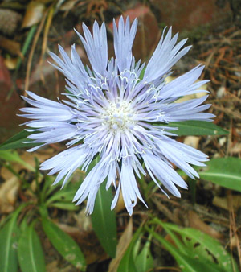

Previous || Next || Return to Mystery Plants || USC Herbarium
This Week's Mystery Plant | Dr. John B. Nelson Curator, USC Herbarium |
|
We are confronted this week with a beautiful native species, one which really is a bit mysterious. It is a perennial herb that is commonly seen in gardens, maybe even yours. It is known historically, and in natural environments, only from the southeastern USA, from South Carolina west to Mississippi. This species is unmistakable. It is an obvious member of the sunflower family, and is blooming now. Its relatively large heads of flowers, up to nearly 4" across, are a huge hit with modern gardeners. The individual flowers are bright, clear blue, but there are many recent cultivars that have white, pink or purple flowers. The species is currently quite popular around the world, especially in Europe and Japan. Here in the Southeast, it remains a fairly common garden plant.
The mystery arises in its origin. Presently, it is most common in the Southeast in southern Mississippi, where it is seen in boggy places, these often featuring pitcher plants and other wetland species. Farther east, our mystery plant becomes less and less common. It can be seen in South Carolina's low-country forests, but it is always in roadside ditches or other disturbed habitats. This suggests that the plants we see here are actually persisting or escaped from cultivation, and not really naturally occurring. Until a bit more historical and botanical research is done, the best we can tell is that this species was probably native to South Carolina before the Civil War, but that it is very rare now as a naturally occurring plant--or it may not occur naturally any longer. If this is true, it follows that this plant deserves special attention as a rare species, throughout its range, and probably deserves to be protected in the wild. It is still quite a hit in cultivation, and probably will be for many years to come. |
 Photo by John Cely |